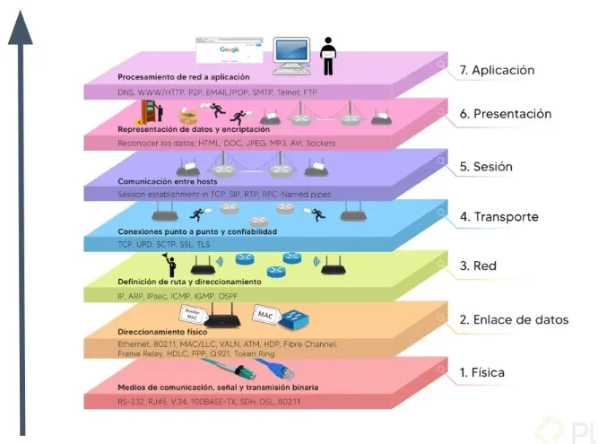

Soy Alejandra González, tengo 22 años y soy de la ciudad de Ibagué. Me encuentro cursando octavo semestre de Ingeniería de Sistemas y quinto semestre de Ingeniería Industrial en la Universidad de Ibagué. Mi animal favorito es el gato, tengo uno llamado Michi y una llamada Molly. Me gusta mucho leer libros, ver películas y series. Mi serie favorita es Stranger Things.
El modelo OSI es un modelo que sirve para entender cómo se comunican los dispositivos entre sí a través de una red. Está dividido en 7 capas y cada una cumple una función diferente para que la información pueda viajar desde un dispositivo hasta otro.

Es un protocolo que se encarga de identificar los dispositivos que están conectados a una red mediante una dirección IP. Su función es permitir que los datos puedan viajar de un dispositivo a otro y llegar al destino correcto.
HTTP es un protocolo de la capa de Aplicación que permite la comunicación entre un navegador y un servidor. Funciona mediante solicitudes y respuestas: el navegador pide información y el servidor se encarga de enviársela para que se pueda ver la página web.